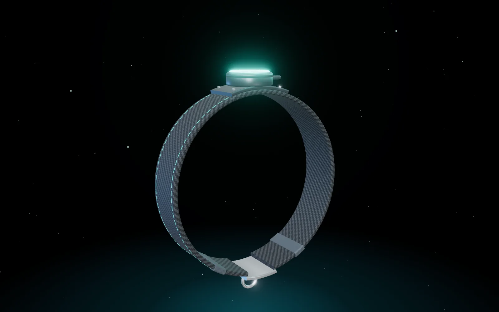
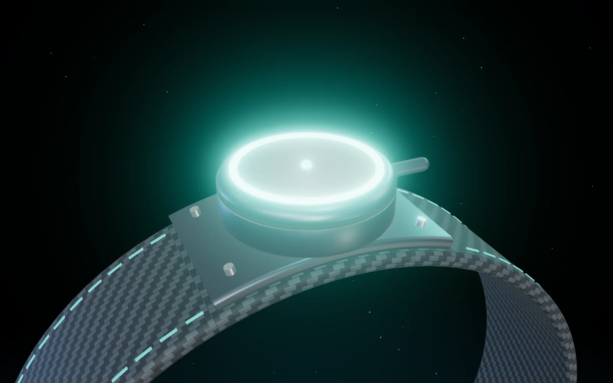
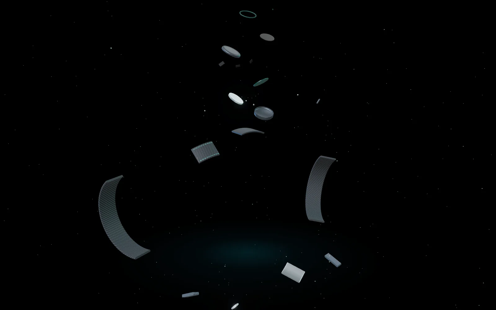
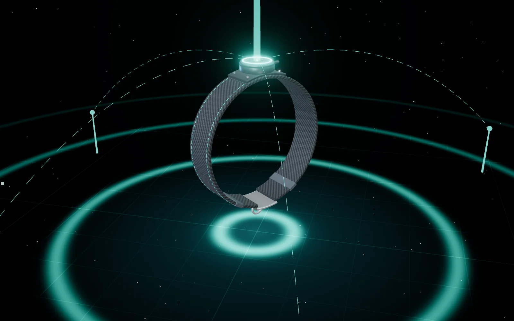
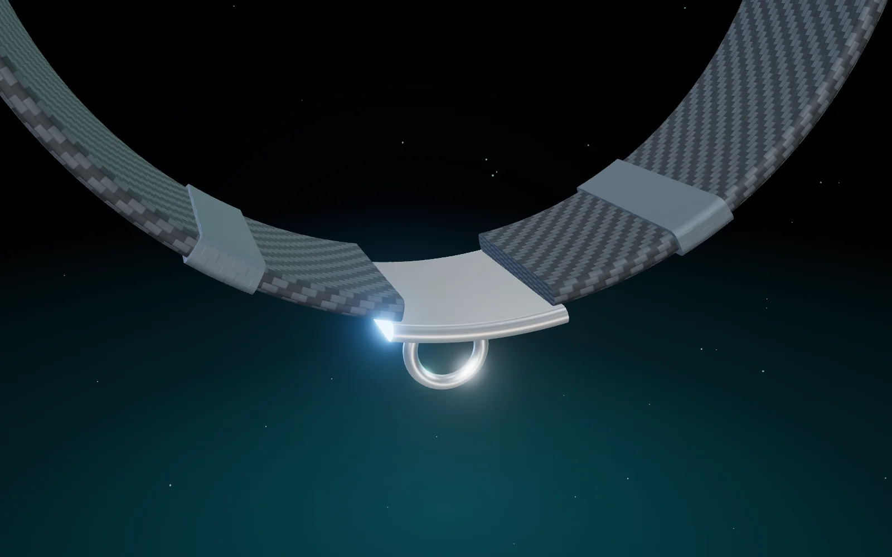
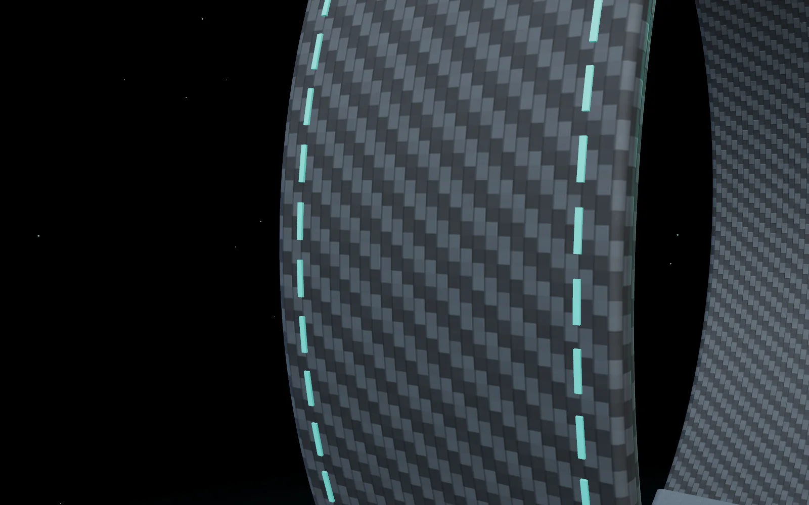

Maya Halo

The GPS collar that doesn’t need a SIM.
No SIM card. No monthly fee. A collar that simply knows where your pet is.
One ring of light. Always on, barely there.
A woven strap, titanium hardware, a module that sits flat against the neck.
Every report is AES-128 encrypted. Only you can read where your pet is.
Maya Halo speaks LoRa on 433 MHz. 1–3 km across a city, up to 15 km with a clear line of sight.
Every gateway, at a clinic, a shelter or a neighbour’s window, carries every collar.
Maya Halo
Why no SIM
Cheap GSM modules are unreliable. Good ones are expensive. And coverage fades exactly where pets like to wander. So we built the collar on LoRa: a radio that sips power and reaches for kilometres.
Craft — 01
Each report is 41 bytes and about 185 ms of airtime. That is why a small cell lasts days, not hours, and why the collar can sleep between reports.

Craft — 02
Every collar has its own AES-128 key. Gateways relay bytes they can’t read, change or forge. Replayed messages are rejected.

Craft — 03
Hold a LoRa Finder and it hears the collar directly, then shows its position in the Pet Maya app over Bluetooth. It can ring the collar too.

Specifications
| Positioning | u-blox NEO-6M GPS |
| Radio | LoRa, 433 MHz (SX1278) |
| Security | AES-128-CCM, replay-protected |
| Reporting | 20 s · 5 min · 30 min (set in the app) |
| Range | 1–3 km city · 5–15 km line of sight |
| Battery | About 9–10 days at 2-min reports* |
| Alerts | Safe-zone exit · low battery · lost mode |
| Find it | 30 s buzzer · offline LoRa Finder |
| Mobile data | None |
* Estimate for a 1000 mAh cell with a power-optimised build. Range depends on local regulations, antenna and terrain.
Every gateway we install makes the network better for every pet.The Pet Maya network

